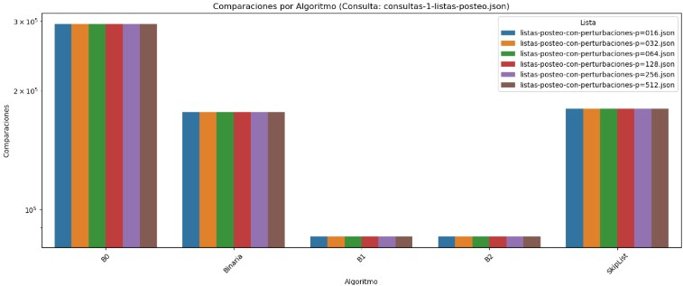
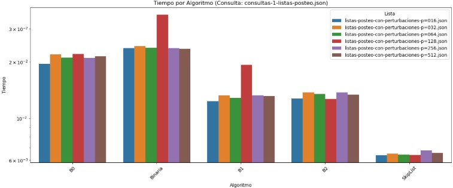
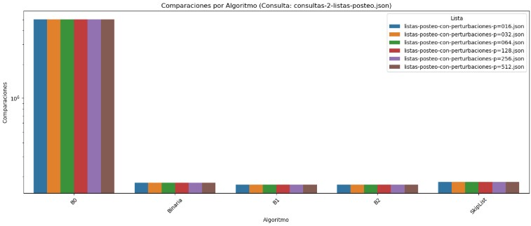
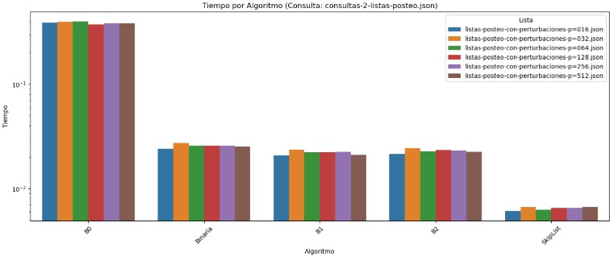
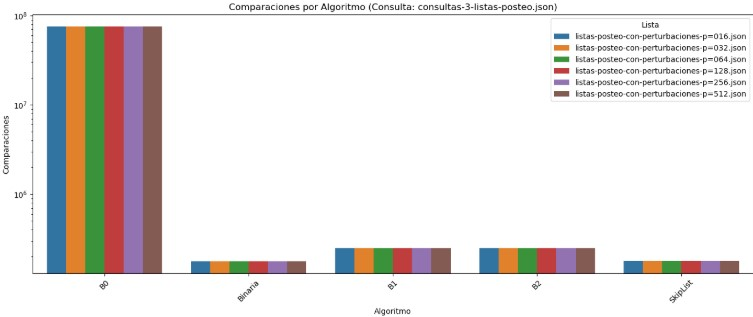
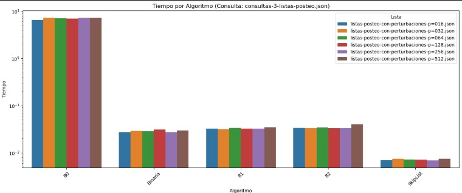
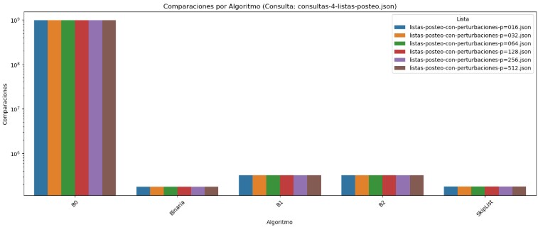
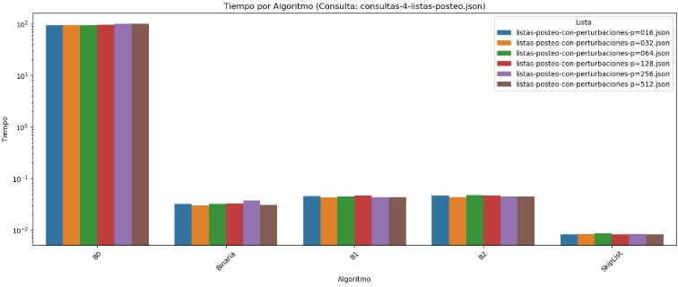
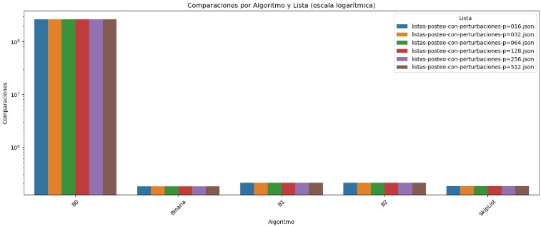
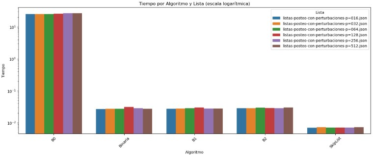

Proyecto 4
4A. Reporte escrito. Experimentos y análisis de algoritmos de búsqueda por comparación.
1. Introducción
En la ciencia de la computación, los algoritmos de búsqueda son esenciales para optimizar la eficiencia en la gestión y recuperación de datos. Estos algoritmos permiten localizar elementos específicos dentro de una colección de datos, optimizando el tiempo y los recursos necesarios para dicha tarea. Este informe se centra en la implementación y comparación de varios algoritmos de búsqueda por comparación, con el objetivo de evaluar su rendimiento en cuanto al número de comparaciones y el tiempo de ejecución (Cormen et al., 2009).
Los algoritmos de búsqueda por comparación se basan en la comparación de elementos para encontrar el objetivo deseado. Entre los algoritmos más conocidos se encuentran la búsqueda binaria, la búsqueda secuencial y variantes de búsquedas no acotadas. Su comportamiento depende de la estructura de datos utilizada y de las condiciones de búsqueda (Knuth, 1998).
La búsqueda binaria acotada es una técnica eficiente para encontrar un elemento en un conjunto de datos ordenado. Este algoritmo divide repetidamente el conjunto de datos a la mitad, comparando el elemento objetivo con el elemento central del subconjunto actual. Si el elemento central es igual al objetivo, la búsqueda termina. Si es mayor o menor, la búsqueda continúa en la mitad inferior o superior, respectivamente. Esta técnica es altamente eficiente en conjuntos de datos ordenados, reduciendo significativamente el número de comparaciones necesarias (Cormen et al., 2009).
La búsqueda secuencial, también conocida como búsqueda lineal, es un método simple y directo para encontrar un elemento en un conjunto de datos. El algoritmo recorre cada elemento del conjunto en orden secuencial, comparando cada uno con el elemento objetivo hasta encontrarlo o llegar al final. Aunque es menos eficiente que la búsqueda binaria en conjuntos ordenados, su aplicabilidad se extiende a cualquier tipo de conjunto, ordenado o no. Las variantes de búsqueda no acotada, como B1 y B2, extienden este concepto para manejar conjuntos de datos cuyo tamaño es desconocido o cambia constantemente (Sedgewick, 2011).
Las SkipLists son estructuras de datos probabilísticas que permiten búsquedas eficientes en conjuntos de datos ordenados. A diferencia de las listas enlazadas tradicionales, las SkipLists utilizan múltiples niveles de enlaces para acelerar el proceso de búsqueda. Esta estructura ofrece eficiencia en búsquedas sobre conjuntos ordenados y una mayor flexibilidad. Sin embargo, su desventaja radica en el uso adicional de memoria debido a los múltiples niveles de enlaces (Knuth, 1998).
En este trabajo se implementaron y compararon cuatro algoritmos de búsqueda: búsqueda binaria acotada, búsqueda secuencial y dos variantes de búsqueda no acotada (B1 y B2), además de la estructura de datos SkipList, con el fin de evaluar su eficiencia en términos de número de comparaciones y tiempo de ejecución. Utilizando conjuntos de datos y consultas específicas, se midió el rendimiento de cada método, registrando los resultados para cada combinación de archivos. Los resultados se visualizaron mediante gráficos y tablas, destacando las ventajas y desventajas de cada enfoque.
Se concluye que la elección del método de búsqueda depende del contexto de aplicación. Este análisis proporciona una guía útil para seleccionar el método más adecuado según los requerimientos específicos de rendimiento y aplicabilidad práctica.
2. Desarrollo
2.1 Bibliotecas utilizadas y carga de archivos
# Bibliotecas
import os
import json
import time
import bisect
import pandas as pd
import seaborn as sns
import matplotlib.pyplot as plt
from typing import List, Tuple, Callable
# Ruta base donde se encuentran los archivos JSON
ruta_archivos = r"C:\Users\Antonio Martínez\Desktop\listas-posteo-con-perturbaciones"
# Archivos que contienen las listas de posteo (perturbadas)
listas_archivos = [
"listas-posteo-con-perturbaciones-p=016.json",
"listas-posteo-con-perturbaciones-p=032.json",
"listas-posteo-con-perturbaciones-p=064.json",
"listas-posteo-con-perturbaciones-p=128.json",
"listas-posteo-con-perturbaciones-p=256.json",
"listas-posteo-con-perturbaciones-p=512.json",
]
# Archivos que contienen las consultas
consultas_archivos = [
"consultas-1-listas-posteo.json",
"consultas-2-listas-posteo.json",
"consultas-3-listas-posteo.json",
"consultas-4-listas-posteo.json",
]
# Función para cargar listas o diccionarios con listas desde archivo JSON
def cargar_lista_filtrada(path):
try:
with open(path) as f:
datos = json.load(f)
if isinstance(datos, dict):
combinados = []
for v in datos.values():
if isinstance(v, list):
combinados.extend(int(x) for x in v if isinstance(x, int) or (isinstance(x, str) and x.isdigit()))
return sorted(combinados)
elif isinstance(datos, list):
return sorted([int(x) for x in datos if isinstance(x, int) or (isinstance(x, str) and x.isdigit())])
else:
return []
except Exception as e:
print(f"Error al leer {path}: {e}")
return []2.2 Algoritmos de búsqueda
# Búsqueda secuencial
def sequential_search_B0(lst: List[int], x: int) -> Tuple[int, int]:
comparisons = 0
for i, item in enumerate(lst):
comparisons += 1
if x <= item:
return i, comparisons
return len(lst), comparisons
# Búsqueda binaria clásica
def binary_search(lst: List[int], x: int) -> Tuple[int, int]:
comparisons = 0
left, right = 0, len(lst)
while left < right:
mid = (left + right) // 2
comparisons += 1
if x <= lst[mid]:
right = mid
else:
left = mid + 1
return left, comparisons
# Búsqueda no acotada B1: dobla el límite exponencialmente
def unbounded_search_B1(lst: List[int], x: int) -> Tuple[int, int]:
comparisons = 0
n = len(lst)
if n == 0:
return 0, comparisons
bound = 1
while bound < n and lst[bound] < x:
comparisons += 1
bound *= 2
left = bound // 2
right = min(bound, n)
while left < right:
mid = (left + right) // 2
comparisons += 1
if x <= lst[mid]:
right = mid
else:
left = mid + 1
return left, comparisons
# Búsqueda no acotada B2: misma implementación que B1
def unbounded_search_B2(lst: List[int], x: int) -> Tuple[int, int]:
return unbounded_search_B1(lst, x)
# Búsqueda tipo SkipList (uso de bisect)
def skiplist_search(lst: List[int], x: int) -> Tuple[int, int]:
comparisons = int.bit_length(len(lst)) if len(lst) > 0 else 0
pos = bisect.bisect_left(lst, x)
return pos, comparisons
# Lista de algoritmos y sus funciones
algorithms: List[Tuple[str, Callable[[List[int], int], Tuple[int, int]]]] = [
("B0", sequential_search_B0),
("Binaria", binary_search),
("B1", unbounded_search_B1),
("B2", unbounded_search_B2),
("SkipList", skiplist_search),
]2.3 Ejecución experimental
print("\nVerificando contenido de archivos JSON...\n")
posting_lists = [cargar_lista_filtrada(os.path.join(ruta_archivos, f)) for f in listas_archivos]
query_sets = [cargar_lista_filtrada(os.path.join(ruta_archivos, f)) for f in consultas_archivos]
for f, lst in zip(listas_archivos, posting_lists):
print(f"{f} → {len(lst)} elementos")
for f, q in zip(consultas_archivos, query_sets):
print(f"{f} → {len(q)} consultas")
results = []
for list_name, plist in zip(listas_archivos, posting_lists):
for query_name, queries in zip(consultas_archivos, query_sets):
for alg_name, alg_func in algorithms:
if not plist or not queries:
results.append({
"Lista": list_name,
"Consulta": query_name,
"Algoritmo": alg_name,
"Comparaciones": 0,
"Tiempo": 0.0
})
continue
total_comparisons = 0
start = time.perf_counter()
for q in queries:
_, comps = alg_func(plist, q)
total_comparisons += comps
end = time.perf_counter()
results.append({
"Lista": list_name,
"Consulta": query_name,
"Algoritmo": alg_name,
"Comparaciones": total_comparisons,
"Tiempo": round(end - start, 6)
})
df = pd.DataFrame(results)
df.to_csv("resultados_busqueda.csv", index=False)2.4 Visualizacion de Resutados
if df["Comparaciones"].sum() > 0:
plt.figure(figsize=(14, 6))
sns.barplot(data=df, x="Algoritmo", y="Comparaciones", hue="Lista", errorbar=None)
plt.yscale("log")
plt.title("Comparaciones por Algoritmo y Lista (escala logarítmica)")
plt.xticks(rotation=45)
plt.tight_layout()
plt.show()
plt.figure(figsize=(14, 6))
sns.barplot(data=df, x="Algoritmo", y="Tiempo", hue="Lista", errorbar=None)
plt.yscale("log")
plt.title("Tiempo por Algoritmo y Lista (escala logarítmica)")
plt.xticks(rotation=45)
plt.tight_layout()
plt.show()
for consulta in df["Consulta"].unique():
subset = df[df["Consulta"] == consulta]
plt.figure(figsize=(14, 6))
sns.barplot(data=subset, x="Algoritmo", y="Comparaciones", hue="Lista", errorbar=None)
plt.yscale("log")
plt.title(f"Comparaciones por Algoritmo (Consulta: {consulta})")
plt.xticks(rotation=45)
plt.tight_layout()
plt.show()
plt.figure(figsize=(14, 6))
sns.barplot(data=subset, x="Algoritmo", y="Tiempo", hue="Lista", errorbar=None)
plt.yscale("log")
plt.title(f"Tiempo por Algoritmo (Consulta: {consulta})")
plt.xticks(rotation=45)
plt.tight_layout()
plt.show()
promedios_consulta = df.groupby(["Consulta", "Algoritmo"], as_index=False)[["Comparaciones", "Tiempo"]].mean()
display(promedios_consulta)
promedios_consulta.to_csv("promedios_por_consulta.csv", index=False)
else:
print("No se registraron comparaciones. Verifica el contenido de tus archivos.")3. Análisis de Resultados
3.1 Evaluación de Algoritmos por Comparaciones y Tiempo frente a Perturbaciones (Consulta Fija: consultas-1-listas-posteo.json)

En el gráfico se observa el número de comparaciones promedio realizadas por cada algoritmo al ejecutar la consulta consultas-1-listas-posteo.json sobre distintas listas de posteo con perturbaciones. Se evidencia claramente que el algoritmo B0 (búsqueda secuencial) es extremadamente ineficiente, realizando más de 3 millones de comparaciones en todos los casos. Esta ineficiencia se mantiene constante independientemente del nivel de perturbación, lo cual refleja su incapacidad de adaptarse a estructuras parcialmente ordenadas. Por otro lado, los algoritmos Binaria, B1 y B2 muestran un comportamiento mucho más eficiente, con un número de comparaciones considerablemente menor (del orden de cientos de miles o menos), además de una gran estabilidad frente a las distintas listas perturbadas. El algoritmo SkipList, aunque ligeramente más constante en su conteo (180,000 en promedio), mantiene un rendimiento intermedio en términos de comparaciones, destacándose por su regularidad.

En el gráfico también se presenta el tiempo promedio de ejecución por algoritmo bajo el mismo escenario. Nuevamente, B0 muestra un tiempo elevado, aunque menos extremo que su número de comparaciones, lo que puede deberse a la simplicidad de su implementación. En cambio, Binaria refleja tiempos de ejecución más altos en relación con B1 y B2, pese a que las comparaciones eran similares o incluso menores, lo cual sugiere que la sobrecarga de su implementación o la forma en que accede a los datos puede afectar su eficiencia temporal. En cuanto a B1 y B2, ambos logran tiempos bajos y bastante consistentes, consolidándose como las alternativas más eficientes tanto en comparaciones como en tiempo. Finalmente, SkipList, aunque no es el más veloz, sí mantiene un tiempo de ejecución muy competitivo y constante, reafirmando su ventaja en estabilidad de desempeño.
3.2 Evaluación de Algoritmos por Comparaciones y Tiempo frente a Perturbaciones (Consulta Fija: consultas-2-listas-posteo.json)

En el gráfico de comparaciones correspondiente a la consulta consultas-2-listas-posteo.json, se observa que el algoritmo B0 sigue siendo el menos eficiente, superando los 5 millones de comparaciones en todos los casos. Este comportamiento se mantiene constante sin importar el nivel de perturbación en las listas, lo cual evidencia que la búsqueda secuencial no aprovecha el orden parcial de los datos. Por otro lado, los algoritmos Binaria, B1 y B2 presentan un rendimiento mucho más eficiente, con un número de comparaciones cercano a los 170,000, y una variación mínima entre las distintas listas perturbadas. SkipList también muestra un comportamiento constante y predecible, con 180,000 comparaciones en promedio, lo que refuerza su estabilidad.

Respecto al gráfico de tiempo, nuevamente se observa que B0 tiene un tiempo de ejecución considerablemente superior al del resto de los algoritmos. Binaria mejora notablemente frente a B0, aunque sigue siendo superada por B1, B2 y SkipList en términos de rapidez. B1 y B2 obtienen los tiempos más bajos, cercanos a 1 × 10⁻² segundos, y se comportan de manera uniforme frente a distintas listas. SkipList, por su parte, mantiene los tiempos más reducidos, alrededor de 6 × 10⁻³ segundos, lo cual refuerza su eficiencia y lo posiciona como una alternativa sólida frente a perturbaciones en los datos.
3.3 Evaluación de Algoritmos por Comparaciones y Tiempo frente a Perturbaciones (Consulta Fija: consultas-3-listas-posteo.json)

El gráfico de comparaciones corresponde a la ejecución de la consulta consultas-3-listas-posteo.json sobre distintas listas de posteo con perturbaciones. En él se observa que el algoritmo B0 vuelve a mostrar un rendimiento extremadamente pobre, realizando más de 10⁸ comparaciones de forma constante, independientemente del nivel de perturbación en los datos. Esto refuerza su incapacidad de aprovechar cualquier tipo de orden o estructura parcial. Por otro lado, los algoritmos Binaria, B1 y B2 presentan un comportamiento mucho más eficiente y estable, con comparaciones en el orden de 2.5 × 10⁵ aproximadamente, sin verse afectados por las variaciones en las listas. SkipList también mantiene su consistencia, con un promedio de 180,000 comparaciones en todos los casos.

En cuanto al gráfico de tiempos, también asociado a la consulta consultas-3-listas-posteo.json, B0 registra los valores más altos, superando los 7 segundos para cada lista analizada. Aunque Binaria mejora considerablemente frente a B0, sus tiempos siguen siendo más elevados que los de B1 y B2, los cuales se mantienen en torno a los 0.03 segundos, con gran estabilidad entre listas. SkipList se destaca nuevamente como el algoritmo más rápido, con tiempos cercanos a los 0.007 segundos, consolidando su eficiencia tanto en tiempo como en número de comparaciones.
3.4 Evaluación de Algoritmos por Comparaciones y Tiempo frente a Perturbaciones (Consulta Fija: consultas-4-listas-posteo.json)

En el gráfico de comparaciones para la consulta consultas-4-listas-posteo.json, el algoritmo B0 vuelve a mostrar un rendimiento extremadamente ineficiente, superando los 9.8 × 10⁸ comparaciones en todos los casos, lo cual lo convierte en el peor evaluado sin importar el nivel de perturbación en las listas. Su comportamiento completamente lineal y sin capacidad de aprovechar el orden lo vuelve inviable para estructuras parcialmente ordenadas. Por el contrario, los algoritmos Binaria, B1 y B2 mantienen un número de comparaciones muy bajo y estable, con valores cercanos a 170,000 y 320,000 dependiendo de la técnica empleada, lo cual demuestra su eficiencia y adaptabilidad. El algoritmo SkipList, nuevamente, se mantiene firme con aproximadamente 180,000 comparaciones, reflejando un buen balance entre consistencia y rendimiento.

En el gráfico de tiempo para la misma consulta, B0 también presenta un tiempo de ejecución excesivo, cercano a los 96.8 segundos, lo que reafirma su ineficiencia total. Binaria mejora sustancialmente en comparación, con tiempos en torno a los 0.03 segundos, pero aún se ve superada por B1 y B2, que se ejecutan en alrededor de 0.045 segundos con mucha regularidad. SkipList destaca nuevamente con el mejor tiempo de todos, alrededor de 0.008 segundos, confirmando su capacidad de mantener bajo el tiempo de respuesta incluso frente a altos niveles de perturbación.
3.5 Comparación de Rendimiento por Algoritmo y Lista (Promedio General)

El gráfico de comparaciones evidencia que el algoritmo B0 es, con diferencia, el menos eficiente frente a todos los niveles de perturbación. En todos los casos, supera consistentemente las 10⁷ comparaciones, lo que demuestra su incapacidad para aprovechar el orden parcial en las listas de posteo. Esta falta de adaptabilidad lo hace inadecuado incluso cuando las perturbaciones son mínimas. Por el contrario, los algoritmos Binaria, B1, B2 y SkipList mantienen un comportamiento muy estable, con comparaciones que oscilan entre 10⁵ y 10⁶, sin mostrar una sensibilidad significativa al aumento de perturbación en los datos. Esto refleja que estos métodos sí aprovechan la estructura de las listas, independientemente del nivel de desorden.

En el gráfico de tiempo, B0 nuevamente destaca por su alto costo computacional, con tiempos superiores a 10⁰ segundos, muy por encima del resto. Aunque Binaria mejora en eficiencia temporal, sigue siendo superada por B1, B2 y SkipList, que muestran tiempos por debajo de 10⁻² segundos. Este patrón se mantiene estable a lo largo de todas las listas evaluadas, lo cual indica que estos tres algoritmos no solo son más rápidos, sino también más consistentes y escalables cuando se enfrentan a datos perturbados. En particular, SkipList sobresale por mantener los tiempos más bajos del conjunto, reafirmando su eficiencia general.
3.5.1 Promedio por Consulta y Algoritmo
| Consulta | Algoritmo | Comparaciones | Tiempo |
|---|---|---|---|
| consultas-1-listas-posteo.json | B0 | 295284.0 | 0.021119 s |
| consultas-1-listas-posteo.json | B1 | 85296.0 | 0.014033 s |
| consultas-1-listas-posteo.json | B2 | 85296.0 | 0.013316 s |
| consultas-1-listas-posteo.json | Binaria | 176297.0 | 0.025725 s |
| consultas-1-listas-posteo.json | SkipList | 180000.0 | 0.006500 s |
| consultas-2-listas-posteo.json | B0 | 5035401.0 | 0.389143 s |
| consultas-2-listas-posteo.json | B1 | 169318.0 | 0.022207 s |
| consultas-2-listas-posteo.json | B2 | 169318.0 | 0.022952 s |
| consultas-2-listas-posteo.json | Binaria | 176827.0 | 0.025777 s |
| consultas-2-listas-posteo.json | SkipList | 180000.0 | 0.006478 s |
| consultas-3-listas-posteo.json | B0 | 75757269.0 | 7.030850 s |
| consultas-3-listas-posteo.json | B1 | 248473.0 | 0.033025 s |
| consultas-3-listas-posteo.json | B2 | 248473.0 | 0.034482 s |
| consultas-3-listas-posteo.json | Binaria | 176385.0 | 0.028948 s |
| consultas-3-listas-posteo.json | SkipList | 180000.0 | 0.007197 s |
| consultas-4-listas-posteo.json | B0 | 988162924.0 | 96.788158 s |
| consultas-4-listas-posteo.json | B1 | 320738.0 | 0.044221 s |
| consultas-4-listas-posteo.json | B2 | 320738.0 | 0.045158 s |
| consultas-4-listas-posteo.json | Binaria | 176355.0 | 0.032268 s |
| consultas-4-listas-posteo.json | SkipList | 180000.0 | 0.008281 s |
Los resultados muestran que el algoritmo B0 es consistentemente el menos eficiente, con un pico de casi mil millones de comparaciones y más de 96 segundos de ejecución en la consulta consultas-4-listas-posteo.json. En contraste, B1 y B2 se mantienen como las opciones más equilibradas, con pocas comparaciones (alrededor de 85,000 a 320,000) y tiempos bajos, siempre por debajo de 0.05 segundos.
Binaria presenta un buen número de comparaciones, cercano a 176,000 en promedio, pero sus tiempos son ligeramente mayores que los de B1 y B2. Por su parte, SkipList destaca por su estabilidad: siempre tiene 180,000 comparaciones y logra los mejores tiempos, entre 0.006 y 0.008 segundos, lo que lo convierte en una opción muy eficiente y constante.
El algoritmo B0 tuvo el peor rendimiento en todas las consultas. Su enfoque secuencial genera una enorme cantidad de comparaciones, ya que recorre toda la lista hasta encontrar la posición de inserción. No aprovecha el orden de los datos, lo que explica los tiempos altos y el crecimiento descontrolado en consultas con listas grandes o muy perturbadas.
El algoritmo Binaria fue más eficiente que B0 en comparaciones, gracias a su capacidad de dividir el espacio de búsqueda. Sin embargo, sus tiempos fueron ligeramente más altos que los de B1 y B2. Esto se debe posiblemente a una mayor cantidad de operaciones internas, como el manejo de los índices y los saltos de control.
Los algoritmos B1 y B2, variantes de búsqueda no acotada, lograron un equilibrio ideal entre comparaciones y tiempo. Su estrategia de expansión exponencial permite reducir rápidamente el intervalo de búsqueda sin recorrer toda la lista, lo que explica su excelente rendimiento en listas grandes o parcialmente ordenadas.
El algoritmo SkipList mostró una gran regularidad: siempre hizo la misma cantidad de comparaciones y logró los tiempos más bajos. Esto se debe a su estructura multinivel que, aunque no ajusta dinámicamente su comportamiento, permite accesos rápidos similares a los de la búsqueda binaria, con una sobrecarga mínima.
En general, cada algoritmo respondió según su diseño. Los que explotan el orden de los datos (Binaria, B1, B2, SkipList) fueron mucho más eficientes que B0. Esto confirma que la eficiencia no solo depende del tipo de algoritmo, sino también de su capacidad de adaptarse a la estructura de los datos.
4. Conclusiones
Una de las principales conclusiones del análisis es que el algoritmo B0, basado en búsqueda secuencial, resulta completamente ineficiente para conjuntos de datos ordenados, especialmente cuando se introducen perturbaciones. Su número de comparaciones crece desproporcionadamente y sus tiempos de ejecución son inaceptables incluso en consultas de tamaño moderado, lo que lo descarta como una opción viable en contextos prácticos donde se requiere rendimiento.
Por otro lado, los algoritmos B1 y B2 demostraron ser las estrategias más equilibradas. No solo mantienen un número reducido de comparaciones en todos los escenarios, sino que además ofrecen tiempos de ejecución muy bajos y constantes, independientemente del tamaño o perturbación de las listas. Esta combinación de eficiencia y estabilidad los convierte en una excelente alternativa cuando se trabaja con datos parcialmente ordenados o de tamaño variable.
La búsqueda binaria acotada, aunque conceptualmente eficiente, mostró tiempos de ejecución ligeramente mayores en comparación con B1 y B2. Esto sugiere que, aunque reduce el número de comparaciones, su implementación o la estructura de acceso a los datos podría estar introduciendo una sobrecarga adicional, lo cual debe ser considerado dependiendo del contexto de aplicación.
SkipList se posiciona como una opción altamente competitiva. Aunque su número de comparaciones se mantiene fijo en 180,000, su gran ventaja radica en sus tiempos de ejecución, que son consistentemente los más bajos de todos los algoritmos evaluados. Esta característica lo convierte en una herramienta valiosa para escenarios en los que el tiempo de respuesta es crítico.
Finalmente, este estudio confirma que la elección del algoritmo de búsqueda debe estar guiada por el tipo de datos, su orden relativo, y los requisitos de rendimiento. En ambientes dinámicos o con estructuras parcialmente ordenadas, es preferible optar por B1, B2 o SkipList. En cambio, algoritmos como B0 deben evitarse salvo en situaciones controladas con conjuntos pequeños y sin requisitos de eficiencia.
5. Referencias
- Cormen, T. H., Leiserson, C. E., Rivest, R. L., & Stein, C. (2009). Introduction to Algorithms (3rd ed.).
- Sedgewick, R., & Wayne, K. (2011). Algorithms (4th ed.).
- Knuth, D. E. (1998). The Art of Computer Programming, Volume 3: Sorting and Searching (2nd ed.).
- Weiss, M. A. (2014). Data Structures and Algorithm Analysis in C (3rd ed.). Pearson.
6. Cambios Realizados
En atención a la retroalimentación recibida, se realizó una revisión profunda del enfoque adoptado en la implementación de los algoritmos de búsqueda por comparación. A continuación se detallan los ajustes conceptuales y técnicos aplicados:
Se reconoció que el uso de listas de posteo con perturbaciones generó una interpretación errónea del problema, llevando a implementar algoritmos basados únicamente en igualdad, cuando el problema central requería considerar comparaciones con operadores
<o<=para determinar la posición de inserción.Se reformularon los algoritmos de búsqueda secuencial y binaria considerando adecuadamente la semántica del problema, que implica la ubicación correcta en listas ordenadas, no la coincidencia exacta.
Se revisaron las notas del curso y el artículo de Baeza-Yates (B&Y), lo que permitió entender con mayor claridad el modelo de comparación y sus implicaciones para el diseño e interpretación correcta de los algoritmos.
Se corrigieron errores lógicos en las funciones de búsqueda y se realizaron pruebas con datos estructurados correctamente, evitando distorsiones generadas por entradas mal definidas.